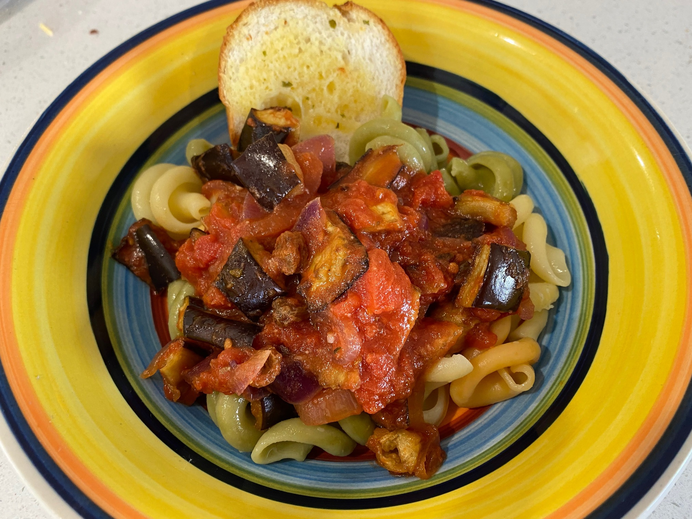

Caponata Pasta

Preheat oven to 200 degrees
1eggplantsomeolive oil
Cut eggplant into 2cm pieces, and bake for 20 mins with olive oil
somepasta
Cook pasta
1red onionsomecelery salt
Cook red onion and celery salt for 10 mins
3 clovesminced garlic1 tspdried oregano80gparmesan cheese2 x 400gdiced tomatoes1/2 cupsultanas1/2 cupwater
Add minced garlic, dried oregano and parmesan cheese , diced tomatoes, sultanas and water
Bring to the boil and then simmer uncovered for 8 mins
1 tbsred wine vinegar
Stir in eggplant and red wine vinegar
Serve with fresh spinach and rocket and parmesan cheese